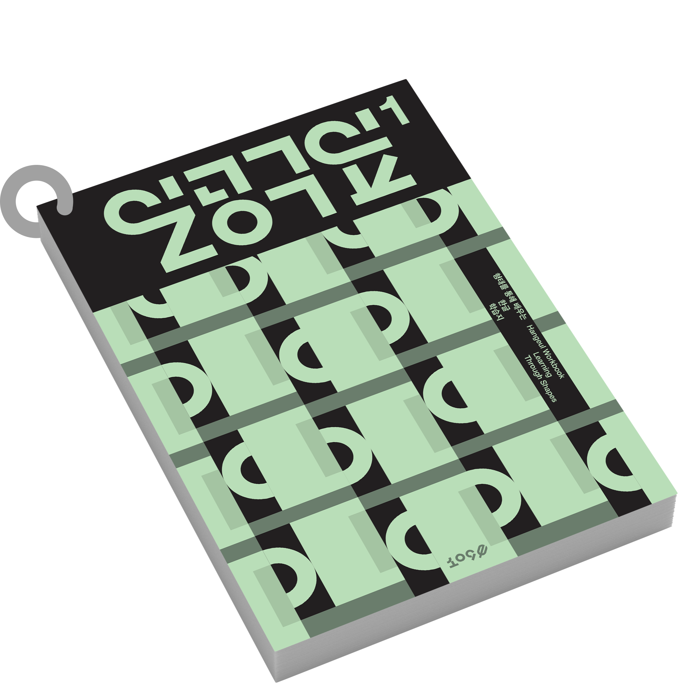
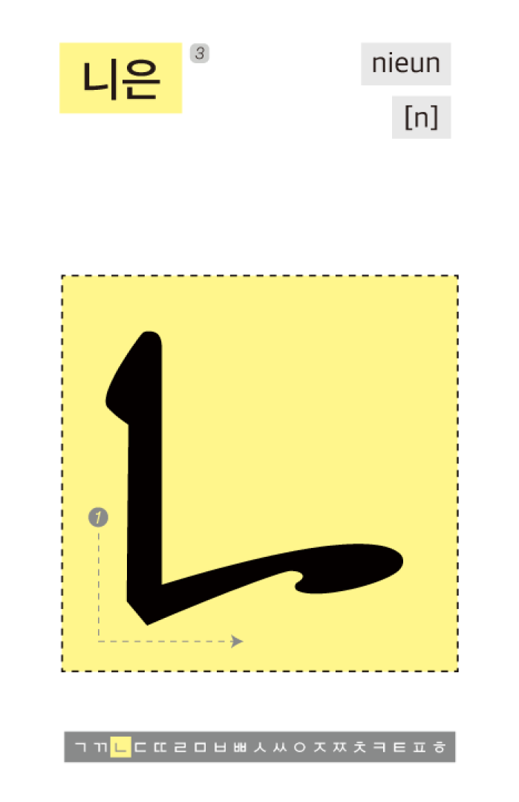
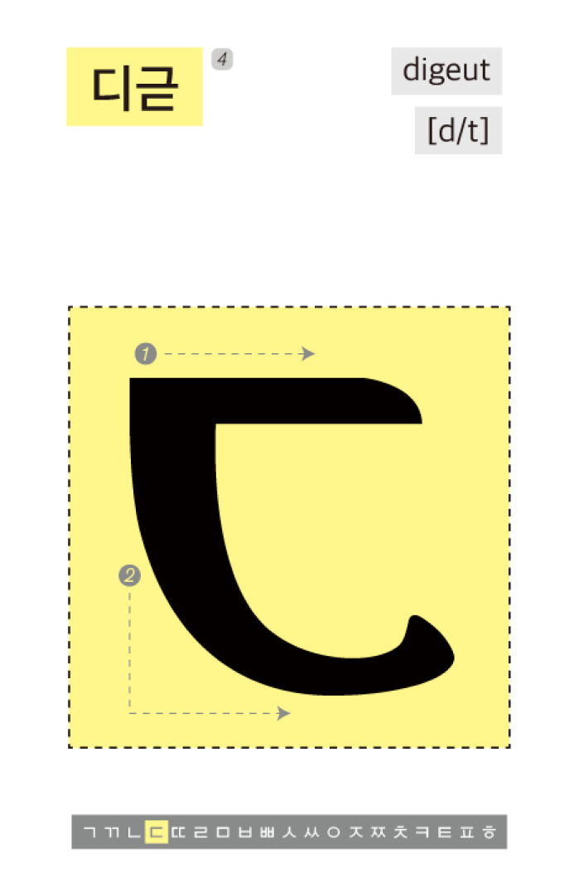
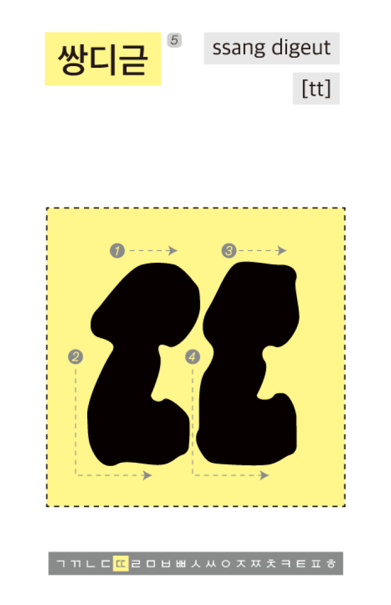
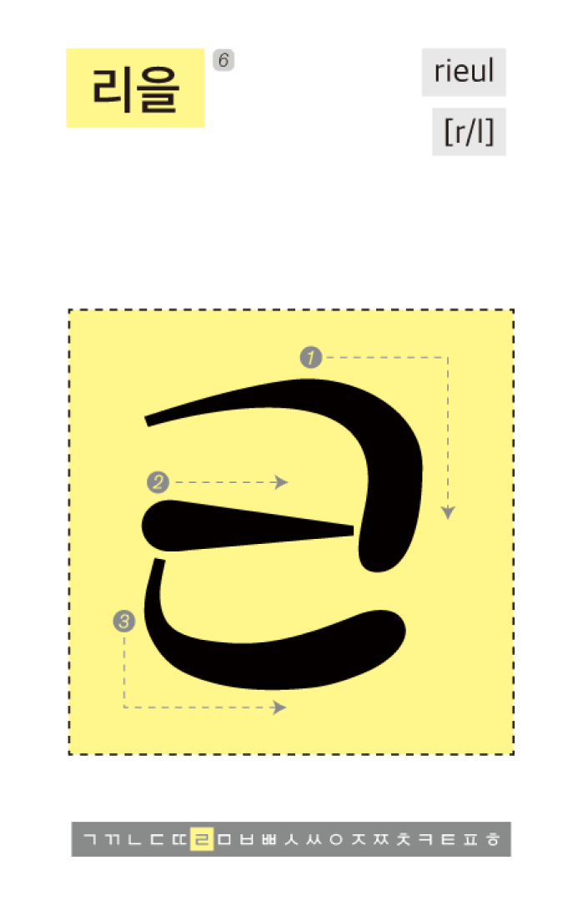
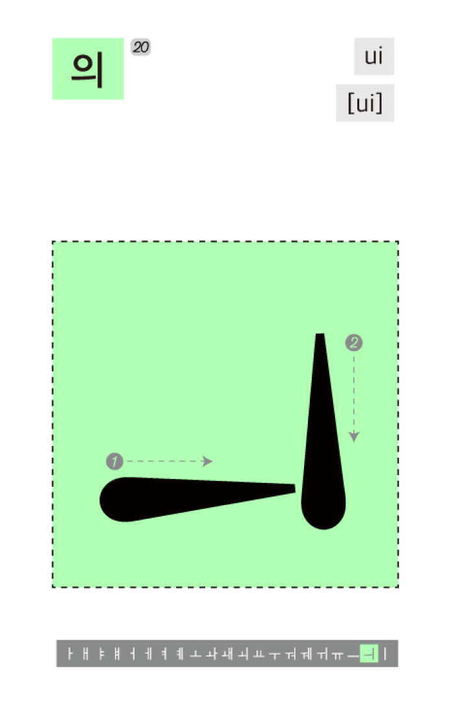

Brand Story
브랜드 스토리
꽃이 피고 지는 수순 속에서, 잎의 존재는 중요하지 않을 수 없습니다.
타이포그래피 또한 디자인에 있어 가장 기틀이 되는 요소이기도 합니다.
‘잎’은 식물의 기본적인 생명활동 기관인 잎에 빗대어
가장 기틀이 되는 타이포그래피를 주축으로 이야기를 전재합니다.
Study Paper
한글날 학습지
꽃은 지난 제오백칠십칠돌 한글날을 기념해 한글의 형태를 중심으로
한글을 배울 수 있는 학습지 브랜드를 제안합니다. 한글의 조형 원리에
따라 제작한 그래픽 시스템을 통해 한글의 구조적 우수성을 이야기합니다.
흥미로운 한글의 가능성을 만나보세요.

Word Card
한글날 낱말 카드
다양한 사물의 아름다움을 담은 한글 낱말 카드를 소개합니다.
여러가지 모티프를 기반으로 탄생한 새로운 한글의 아름다움과
다양성을 함께 만나보세요.
김채영
Kim Chaeyoung
그네의 줄과 그네의 부품의 형태를 모티프로 탄성 있는
느낌을 살리고자 하였습니다.
김민지
Kim Min-ji
깍지 낀 손을 모티프로, 손끼리 맞잡은 형태를
살려 만들었습니다.

윤주향
Yoon Ju-hyang
나비의 구조적 형태와 곡선적 움직임을 모티프로
작업했습니다. 나비가 날아오를 때의 동선과 역동감을
가로획에 적용했습니다.

장서진
Jang Seojin
돌고래의 몸체와 지느러미의 유기적인 곡선 형태를
시각화 하였습니다.

김한슬
Kim Hanseul
땅콩 겉껍질의 거칠거칠하면서도 유기적인
모습을 두꺼운 획으로 표현해 보고자 했습니다.


김유민
Kim Yu-min
털실 뭉치의 울퉁불퉁한 표면 질감을 글자의
형태에 적용했습니다.
강유림
Kang Yu-rim
모자의 실루엣을 모티프로 작업했습니다. 모자를
구성하는 두꺼운 크라운(머리) 부분과 얇은 창의 형상을
이용하여 강한 획의 대비를 주고자 하였습니다.
김민채
Kim Minchae
빙하를 모티프로 단단하고 힘있는 모습을
표현했습니다. 바다에 숨겨진 빙하처럼
보이지 않지만 깊이 있는 한글의 이미지를
나타내고자 하였습니다.
손다현
Son Dahyun
갓 구운 식빵을 모티프로 둥글둥글한 이미지에 발랄한
인상을 더해 만들고자 하였습니다.
강유림
Kang Yu-rim
모자의 실루엣을 모티프로 작업했습니다. 모자를
구성하는 두꺼운 크라운(머리) 부분과 얇은 창의 형상을
이용하여 강한 획의 대비를 주고자 하였습니다.
윤보녕
Yoon Bo
김채영
Kim Chaeyoung
온음표와 음표 꼬리의 형태를 차용하여 작업했습니다.